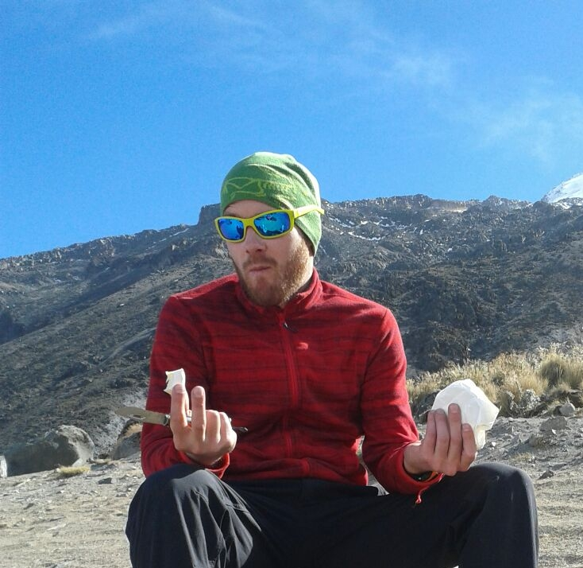

About
I'm a french researcher and scientific programmer trying to solve complex problems in an elegant way. I grew up in France, obtained my PhD in satellite remote sensing from Wageningen University (The Netherlands), and I currently live in Mexico City working for the National Comission for biodiversity use and research (CONABIO). In my free time I climb mountains, enjoy peaceful nature, ride my bike, listen to cumbia and build open source software.
CV
You can download a pdf version of my CV here.
Blog
I write (infrequently) about geo-information and other things on my blog.
Talks
Most relevant open source projects
Completed
In progress
Publications
- Jakovac, C., Dutrieux, L. P., Latifah, S., Peña-Claros, M., Bongers, F. (2017) Spatial and temporal dynamics of shifting cultivation in the middle-Amazonas river: Expansion and intensification, PloS one
- van der Sande, M. T., et al. (2017) The integration of empirical, remote sensing and modelling approaches enhances insight in the role of biodiversity in climate change mitigation by tropical forests, Current Opinion in Environmental Sustainability
- Dutrieux, L. P. (2016). Multidimensional remote sensing based mapping of tropical forests and their dynamics (Doctoral dissertation, Wageningen UR)
- Dutrieux, L. P., Jakovac, C., Latifah, S., Kooistra, L. (2016) Reconstructing land use history from Landsat time-series. Case study of a swidden agriculture system in Brazil. International Journal of Applied Earth Observation and Geoinformation
- Dutrieux, L. P., Verbesselt, J., Kooistra, L., Herold, M. (2015) Monitoring forest cover loss using multiple data streams, a case study of a tropical dry forest in Bolivia. ISPRS Journal of Photogrammetry and Remote Sensing
- Poorter, L., et al. (2015) Diversity enhances carbon storage in tropical forests Global Ecology and Biogeography
- Brede, B., Verbesselt, J., Dutrieux, L. P., Herold, M. (2015) Performance of the Enhanced Vegetation Index to Detect Inner-annual Dry Season and Drought Impacts on Amazon Forest Canopies. The International Archives of Photogrammetry
- Dutrieux, L. P., Bartholomeus, H., Herold, M., Verbesselt, J. (2012) Relationships between declining summer sea ice, increasing temperatures and changing vegetation in the Siberian Arctic tundra from MODIS time series (2000–11). Environmental Research Letters